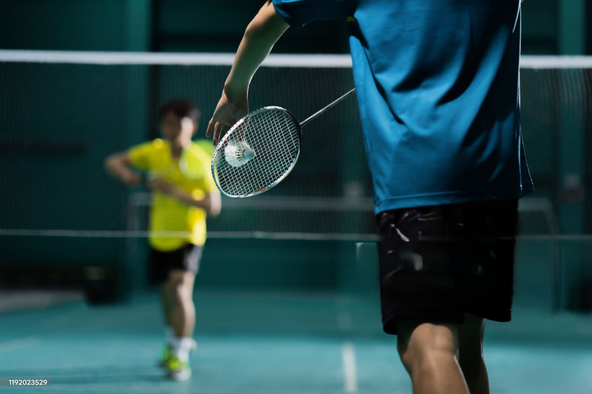
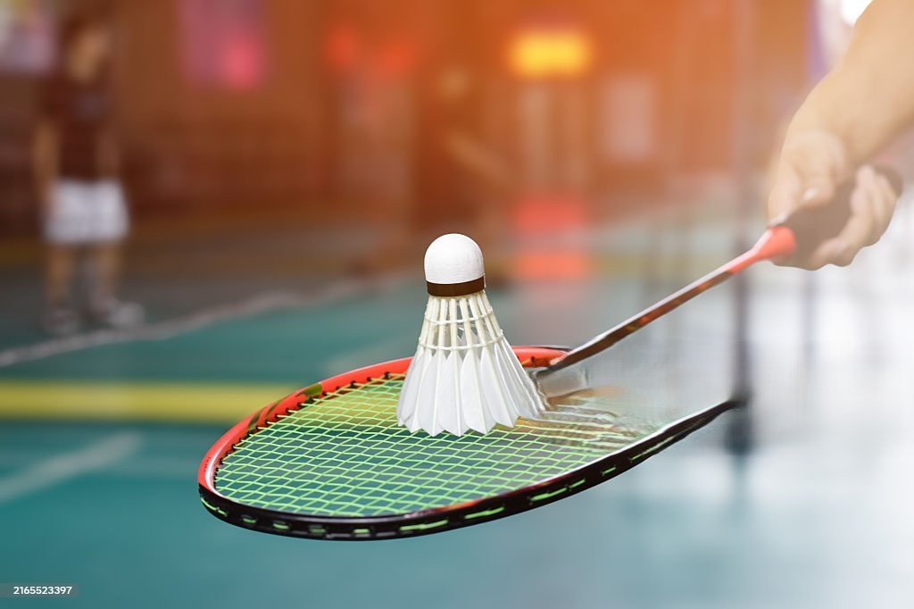
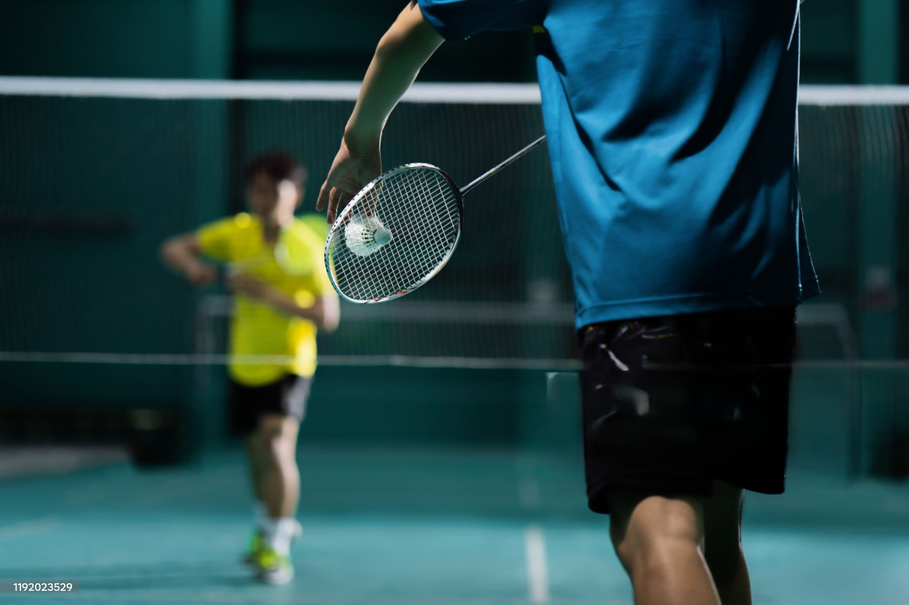
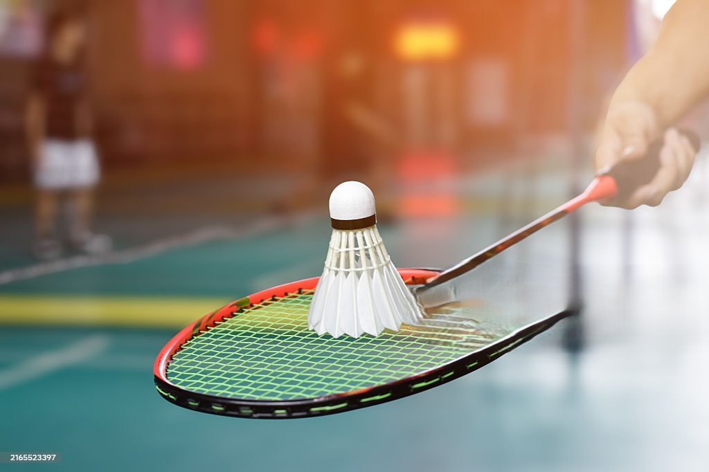

ABOUT US
 



Welcome to the Auckland Girls’ Grammar Badminton Club! We are a community of passionate players who share a love for the fast-paced, dynamic sport of badminton. Our club is open to all skill levels, from beginners learning the basics to experienced players looking to sharpen their competitive edge. Beyond the game, we value teamwork, sportsmanship, and building friendships both on and off the court. Whether you’re here to improve your skills, compete in matches, or simply enjoy the fun and fitness of badminton, our club provides a supportive and inclusive space for everyone.